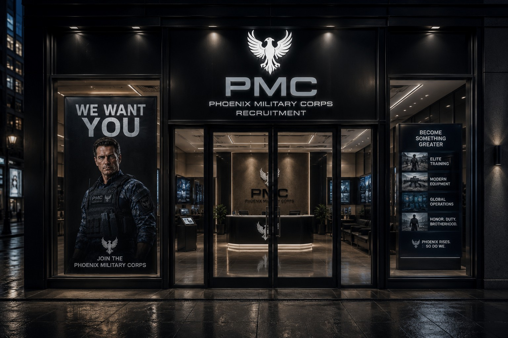
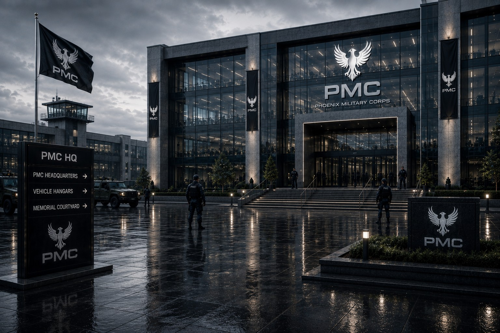
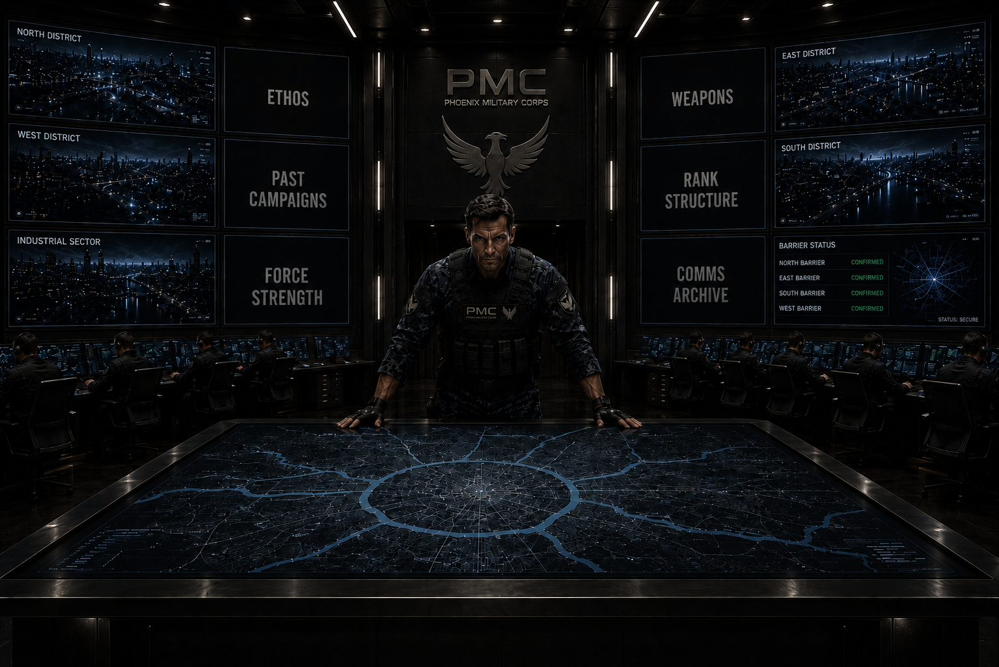
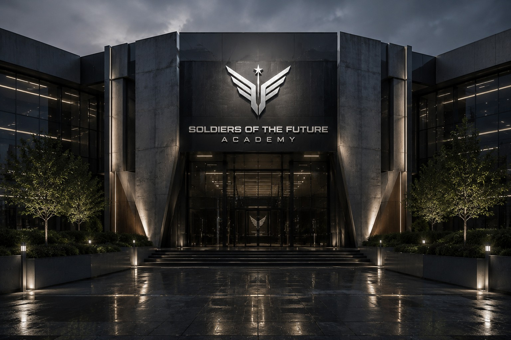
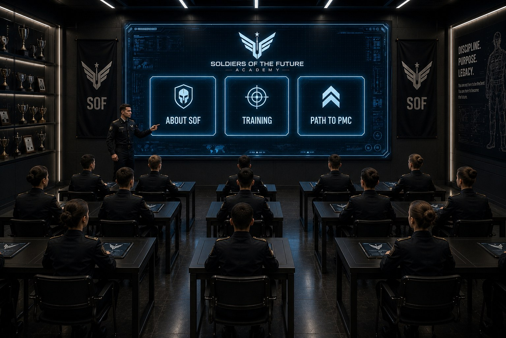

The PMC exists to protect the continent against threats from within and beyond its borders and to safeguard the people of Eurussia from those who would bring them harm. Its allegiance is to the Corps itself, not to any government, administration, or political authority.
PMC operational doctrine is determined by its serving commander and is not permanently defined by charter. Superior personnel numbers, military equipment and continued technological investment form the Corps' principal standing advantages, but the manner in which those resources are employed remains a matter of command judgement.
Under Commander David Whitfield, doctrine has centred on the decisive application of overwhelming force. Once an objective has been authorised, sufficient personnel and resources are committed to secure it as quickly and completely as circumstances allow. Negotiation remains an available option, but is generally reserved for situations in which military action alone cannot secure the required outcome.
Allegiance follows the PMC chain of command, irrespective of province of origin. Personnel will serve wherever deployed and alongside whoever is assigned to them, regardless of where they were recruited or trained.
Following the reforms enacted after the Lewton Province Uprising, standards of internal conduct carry the same weight as discipline in the field. PMC personnel are expected to treat fellow members with respect, stand beside one another without exception and maintain the cohesion of the Corps above personal or provincial loyalties.
Orders issued through the recognised chain of command are to be followed without question, regardless of the order given.
Return to Command CentreAt his father's behest, Commander David Whitfield launched a PMC campaign to bring Hatchet Hills under central authority. PMC entered the operation with a substantial advantage in personnel, firepower and technology. Pre-operation assessments therefore anticipated that organised resistance could be overcome rapidly. Reports from personnel involved in the campaign indicate that these expectations changed once PMC forces advanced deeper into the province.
The campaign commenced with coordinated armour and airstrikes against Hatchet Hills border positions. Defensive installations and outposts sustained extensive damage before PMC ground forces crossed the line. Initial units entering the province reported limited organised resistance, with several defensive positions already destroyed or abandoned.
Early field reports indicated that the outer perimeter had been successfully breached. PMC forces advanced through the damaged defensive line with little obstruction and command assessed that continued pressure could bring the province under control during a single major advance.
Conditions changed once PMC forces left the main roads and moved into the interior. Field reports recorded repeated attacks from elevated terrain, narrow passes and concealed firing positions. Hatchet Hills fighters engaged from ridgelines before withdrawing beyond effective return fire.
Several PMC units were drawn into restricted routes and attacked from three directions at once. Communications records documented repeated contact reports followed by units falling silent. Attempts to apply the same concentrated firepower used against the outer perimeter produced limited results. Hatchet Hills fighters repeatedly changed position following engagements, denying PMC forces the fixed targets required to use their technological and firepower advantage effectively.
By the time PMC reached the heart of the province, the campaign had developed into sustained house-to-house fighting through streets already choked with smoke. Soldiers reported taking fire from windows, rooftops and doorways that had appeared clear moments earlier. Units cleared individual buildings only to come under fire from the next. Casualty reports increased faster than command could reliably track them and Whitfield moved forward personally to determine what was preventing the advance.
It was during the fighting in the city that Whitfield encountered the combatant operating under the field designation Angel of Death. Accounts from soldiers present identify this combatant as the individual coordinating much of the resistance encountered in the centre.
Witness reports describe a prolonged close-quarters engagement between Whitfield and the Angel of Death. The Angel of Death brought Whitfield to the ground on multiple occasions before he was able to get a hand on his opponent. Whitfield inflicted significant damage in return, drawing blood and repeatedly breaking the Angel of Death’s stride. Neither combatant was able to secure a decisive advantage. The engagement continued through multiple exchanges, with neither gaining the opening required to finish the other.
The confrontation ended without either side breaking the other. The centre remained unsecured, casualties continued to mount street by street and no clear route through the remaining resistance had been established. Command subsequently called off the advance and opened negotiations.
The resulting treaty reaffirmed the autonomy of Hatchet Hills. Officially, the settlement was recorded as peace. Accounts from soldiers involved in the campaign described the situation on the ground differently. From their position, PMC had advanced into Hatchet Hills, failed to break the resistance and withdrawn. It looked a lot more like retreat.
Hatchet Hills has honoured the agreement ever since. Permanent checkpoints remain staffed at all recognised border crossings. The identity of the combatant designated Angel of Death has never been confirmed.
BackOver the course of a year, conditions inside Phoenix City took a darker turn. People began disappearing without explanation. Some were kidnapped and held for ransom, while others vanished entirely before later turning up dead. Wealthy residents found themselves targeted for extortion, narcotics became increasingly common on the streets and military weapons began appearing on the black market.
At the same time, stock was disappearing from PMC warehouses. Weapons and other military supplies were going missing without any authorised transfer or operational reason to account for their absence. Initially, there was nothing to establish that the missing stock and the growing criminal activity across the capital were connected.
As investigations progressed, however, patterns began to emerge. Missing PMC equipment could be traced into illegal circulation, while several kidnappings, killings and extortion cases showed signs of involvement by individuals with access to military resources and information.
Attention eventually turned to serving PMC personnel living in Lewton. Investigators found soldiers purchasing expensive properties and mansions far beyond anything their legitimate salaries could support. Financial enquiries into those purchases exposed bribery extending through multiple ranks of the PMC.
The investigations ultimately converged. The criminal activity spreading through Phoenix City and the missing military stock were traced to a rogue PMC faction operating from Lewton. What had initially appeared to be a growing wave of unrelated crime had exposed an organised network within the PMC itself.
Once the extent of the operation had been established, PMC command authorised action against those involved. Loyalist forces were deployed to Lewton with orders to dismantle the rogue faction and bring those responsible under control. By the time they arrived, however, the soldiers involved had fortified their positions and were prepared to resist.
This presented PMC with an unusual problem. The opposition consisted of its own personnel, trained to the same standards and familiar with PMC weapons, tactics and operating procedures. They knew how loyalist forces were likely to approach their positions and had prepared their defences accordingly.
The assault developed into sustained fighting as loyalist units closed on the fortified positions. Reports from those involved recorded significant casualties on both sides, with the defenders using their knowledge of PMC tactics to resist repeated attempts to break through. Fighting continued until loyalist forces breached the remaining defences and overwhelmed the rogue faction.
Lewton was secured and the surviving members of the uprising were taken into custody.
The uprising exposed failures that extended well beyond the personnel directly involved. In response, David Whitfield ordered reforms across the entire PMC, tightening internal oversight and introducing more extensive background checks for serving personnel and new recruits. Financial activity, unexplained wealth and potential criminal associations were subjected to greater scrutiny, with the intention of identifying corruption before it could become established within the organisation.
The reforms also exposed significant weaknesses in Phoenix City's existing intelligence network. Cybertech was already an established institution, but in the aftermath of Lewton it underwent a major technological upgrade alongside the capital itself. New intelligence systems were introduced, surveillance coverage was expanded and security cameras became increasingly widespread throughout Phoenix. The intention was to give authorities the ability to identify connections between criminal activity, military corruption and internal security threats before they could develop on the scale seen during the uprising.
The changes marked a significant shift in the way Phoenix City was monitored. What began as a direct response to the failures exposed by Lewton became the foundation of the extensive surveillance and intelligence infrastructure that would later operate throughout the capital.
Lewton itself was reorganised following the fighting. Its military presence was substantially increased and the area developed into one of PMC's most heavily fortified positions, preventing a comparable faction from establishing itself there again. Its location also made it an effective defensive gateway into Phoenix City, adding a major fortified position to the approaches to the capital.
BackShaddock Province occupies the corridor between the southern provinces and Greentown, making it strategically important to movement between the two regions. Its location ultimately attracted a group of former Trench operatives, expelled from service, who had become disillusioned with the administration of both the Trench and the capital, particularly the treatment of those living and serving there.
Intelligence gathered following the uprising established that Shaddock had been deliberately selected. The former operatives wanted territory from which they could challenge Phoenix and control of the corridor gave them a position of sufficient strategic importance to make that challenge difficult to ignore.
The uprising began with a coordinated coup against the Phoenix-backed provincial government. The governor and members of his administration were captured and executed, while government buildings and other key positions were seized before loyalist forces could organise an effective response.
With the recognised leadership dead, the former Trench operatives assumed control and declared Shaddock independent. The speed of the takeover allowed them to consolidate their position before Phoenix could intervene. What reached the capital was therefore not a developing period of civil unrest, but confirmation that an armed and experienced group had taken control of an entire province.
Commander David Whitfield was ordered to retake Shaddock. Bryn Walker, governor of neighbouring Marsh Valley, opened his province to PMC forces and took in refugees fleeing Shaddock. Military assessments identified the province's geography as the principal weakness in the rebel position. Although the corridor had made Shaddock valuable enough to seize, its relatively open approaches provided few natural defences against a conventional military advance.
PMC forces encountered organised resistance after entering the province. The former Trench operatives used their previous training to establish defensive positions and coordinate their response, but they lacked the manpower and equipment required to withstand sustained pressure from a full PMC deployment.
As the advance continued, defensive positions were identified and systematically broken. Attempts to regroup became increasingly difficult as PMC forces maintained momentum, forcing the rebels away from prepared locations and reducing the territory under their control.
The heaviest fighting occurred around the remaining rebel-held positions. Former Trench personnel continued to resist, using their operational experience to slow the PMC advance, but the terrain offered little opportunity to disengage once their locations had been identified.
Commander Whitfield maintained the offensive rather than allowing the rebels time to reorganise. Fighting continued until their remaining defences were overwhelmed. The rebel leader was killed during the engagement, breaking the command structure and bringing coordinated resistance to an end.
PMC secured the province.
Phoenix installed Bryn Walker as Shaddock’s new governor and established a permanent PMC presence across the province. The scale of the military response went beyond the immediate requirement to retake the territory. The damage inflicted during the operation was allowed to stand as evidence of the consequences of armed defiance against the capital.
There was no negotiated settlement and no concession of autonomy. The coup had removed and executed a Phoenix-backed government and the response had been decisive. News of the destruction spread into neighbouring provinces, giving the operation a deterrent value far beyond Shaddock itself.
The message was understood. Phoenix possessed the means to answer rebellion with overwhelming force and, when circumstances permitted, would use it.
Shaddock remains under Phoenix-aligned government with a permanent PMC deployment maintaining security throughout the province. No further attempt at independence has occurred.
The Midwest Uprising subsequently became one of the capital's clearest warnings to the provinces. Shaddock had challenged Phoenix directly and been decimated for doing so.
BackThe Ground Forces figure consists primarily of infantry personnel distributed across Eurussia. It includes regular infantry, heavy infantry, weapons teams, reconnaissance personnel, base and installation forces, provincial deployments and troops assigned to permanent defensive positions. It also includes reserve formations maintained for reinforcement and large-scale mobilisation.
The Armoured Divisions figure extends well beyond vehicle crews. It includes tank crews, armoured transport crews, vehicle commanders, mechanics, weapons technicians, recovery crews, refuelling teams and personnel attached to armoured bases and vehicle depots. A significant proportion of the department therefore consists of the specialists required to keep its vehicles operational rather than personnel physically crewing them.
The Logistics & Supply total includes warehouse personnel, depot staff, drivers, cargo handlers, inventory teams, ammunition handlers, fuel crews, transport coordinators and personnel assigned to PMC storage facilities throughout Eurussia. Transport personnel account for a substantial part of the department due to the distances separating PMC installations across the continent.
Only a fraction of Air Command personnel are pilots. The overall figure includes pilots, helicopter crews, flight crews, aircraft technicians, weapons crews, ground crews, airfield staff, air traffic controllers, refuelling personnel, maintenance specialists and personnel stationed at PMC airbases. Transport and combat aviation are both included within the total.
This figure includes military engineers, construction crews, structural specialists, demolition personnel, electricians, mechanics, surveyors, heavy-equipment operators, maintenance teams and permanent staff attached to PMC engineering facilities. Specialist teams are also maintained for work requiring technical expertise beyond that of regular forces.
The Medical Corps includes battlefield medics, nurses, doctors, surgeons, anaesthetists, surgical teams, rehabilitation personnel, pharmacists, medical technicians, ambulance crews and staff assigned to PMC hospitals and treatment facilities. Administrative and support personnel working within the military medical system are also counted within the total.
This figure includes recruitment officers, candidate assessors, instructors, physical training staff, weapons instructors, specialist trainers, examination staff, training-centre personnel and administrative staff responsible for processing the large number of recruits entering the PMC. Experienced personnel assigned permanently to training establishments are included within the department rather than their former operational branch.
Communications personnel include radio operators, signal personnel, network technicians, communications engineers, encryption specialists, equipment technicians, relay-station crews and staff assigned to communications centres. The figure also includes communications personnel embedded with forces and installations throughout Eurussia.
The Intelligence total includes field intelligence officers, analysts, surveillance personnel, interrogators, intelligence researchers, threat-assessment teams, reconnaissance analysts, records personnel and specialists assigned to individual commands. Personnel working within secure intelligence facilities and those attached directly to deployed PMC forces are included within the same figure.
Combined, PMC personnel strength reflects not only the soldiers standing in formation, but the full weight of the machinery, medicine and supply lines required to keep them there.
Return to Command CentreThe Commander holds supreme authority over all PMC operations. Every department, deployed force and senior officer ultimately answers to the Commander. The Commander determines operational doctrine, authorises major deployments and sets the strategic direction of the Corps.
Each department operates under its own General, who answers directly to the Commander and holds overall responsibility for the readiness, deployment, performance and conduct of their respective branch. Departments include Ground Forces, Intelligence, Air Command, Armoured Divisions, Logistics & Supply, Engineering & Fortifications, Communications, Medical Corps and Recruitment & Training.
Within the combat divisions, Section Leaders command individual forces of five hundred troops. They are responsible for maintaining operational readiness, enforcing discipline and directing their section during deployment. Once in the field, responsibility for the performance and conduct of those five hundred personnel rests with their Section Leader.
Support departments operate under specialist command appointments rather than the Section Leader structure used by combat divisions. Each chief holds authority over their respective field, its personnel and its operational standards, while remaining answerable to the General commanding that department.
The Surgical Chief oversees the Medical Corps and holds responsibility for medical personnel across the PMC. The role governs battlefield treatment, casualty response, surgical teams, medical facilities and the standards under which wounded personnel are treated and returned to service.
The Supply Chief oversees the movement and distribution of equipment, ammunition, food, fuel and other supplies required to keep PMC forces operational. During deployments, the Supply Chief ensures supply lines remain functional and deployed forces receive what they need without interruption.
The Chief Engineer holds overall responsibility for PMC engineering personnel and the infrastructure required to support military operations. Responsibilities include the construction and maintenance of military infrastructure, defensive works, field installations and other engineering projects required during PMC operations.
The Communications Chief oversees the systems connecting PMC command with forces operating across the continent. Responsibilities include maintaining secure battlefield communications, command networks and the infrastructure required to keep deployed units in contact with one another.
The Intelligence Chief oversees the collection, assessment and distribution of intelligence throughout the PMC. Information concerning hostile forces, internal threats, developing conflicts and potential security risks is processed through the department before being passed through the appropriate levels of command.
The Head of Recruitment oversees Recruitment & Training and is responsible for the intake of new PMC personnel. Responsibilities include recruitment standards, initial assessment, training requirements and the process by which recruits are prepared and assigned for service within the Corps.
Return to Command Centre

When Johnathan Wilkes assumed command of the PMC, its forces remained scattered across numerous facilities throughout several provinces, with no single location serving as the centre of the organisation. One of Wilkes's first major reforms was to centralise the Corps in Phoenix, establishing a permanent command hub from which its forces could be coordinated.
The relocation was accompanied by a new name: the Phoenix Military Corps. Despite centralising the organisation in the capital, Wilkes maintained its responsibility for Greentown's defence, which at the time had no equivalent standing military force of its own.
Krashnov, by contrast, had already established the K-Militia. Wilkes saw the standard of its personnel and recognised that the newly centralised PMC needed a more consistent quality of soldier. Recruitment continued to produce personnel of widely varying ability, discipline and suitability for service, something Wilkes considered incompatible with the force he intended to build.
Wilkes raised the problem with King Wayne Whitfield, arguing that the PMC needed a better means of determining who was suitable to enter its ranks. The two discussed how recruitment could be restructured, eventually developing the concept of a dedicated institution that would train and assess prospective soldiers before they were permitted to join the Corps.
Together, Wayne and Wilkes created Soldiers of the Future.
SOF was created to establish a consistent standard among those seeking to enter the Phoenix Military Corps. Rather than accepting volunteers directly into service and discovering their capabilities afterwards, the Academy would provide the PMC with a dedicated system through which prospective personnel could be developed and assessed before reaching its ranks.
The intention was not to produce identical soldiers. The PMC required personnel with different strengths and aptitudes across a wide range of military and support roles. SOF instead established the standard expected of anyone seeking to serve within the organisation, ensuring that willingness to enlist alone was no longer sufficient.
This allowed the Academy to accept candidates from a broad range of backgrounds and levels of ability. Those entering SOF were not expected to arrive as finished soldiers. The institution existed to determine what they could become, while preventing those unable to reach the required standard from progressing into the Corps.
The main SOF Academy was established in Phoenix, a short distance from PMC Headquarters. Built as a sprawling military campus rather than a single facility, the Academy contains numerous buildings and dedicated training areas designed to support recruits throughout the five-year programme.
Academic buildings provide classrooms, examination halls and specialist teaching facilities, while separate areas support weapons instruction, physical conditioning and practical training. The campus also contains accommodation, medical facilities, dining areas and the administrative infrastructure required to support its recruits and instructors.
Large sections of the site are devoted to practical training and assessment, including indoor and outdoor training grounds, obstacle courses, firing ranges and purpose-built exercise areas. More advanced field exercises can extend beyond the Academy when the scale or requirements of an assessment demand it.
Not every recruit lives on campus. Residential accommodation is provided particularly for those arriving from outside Phoenix, while recruits already living within practical travelling distance may remain at home and travel to the Academy each day. All recruits are required to remain on site whenever training schedules, exercises or extended assessments demand it.
Return to ClassroomTraining at SOF begins at sixteen and develops across five years, with each stage becoming progressively more demanding. Academic ability, physical conditioning, weapons proficiency, fieldcraft and decision-making are developed throughout the programme, with recruits expected to build upon what they have learned during each preceding year.
The early stages provide the foundations under controlled conditions. As recruits advance, those conditions become more demanding and less predictable, with individual disciplines increasingly brought together. By the final years, recruits are expected to apply everything they have learned while operating under pressure, fatigue and uncertainty.
The first year establishes the fundamentals. Written testing covers mental arithmetic, language comprehension, memory, basic reasoning and straightforward problem-solving, while physical instruction establishes fitness, strength and endurance through running, obstacle courses and repeated assessments.
Weapons training begins with safe handling, maintenance, firing positions and basic accuracy. Introductory navigation and teamwork exercises are also incorporated, with clearly defined objectives and controlled conditions allowing recruits to develop the basic skills required for the years ahead.
The second year raises the standard across every area. Written examinations introduce more difficult calculations, longer comprehension exercises, greater memory demands and multi-stage reasoning problems, with increasing time pressure requiring recruits to process information more efficiently.
Physical tests become harder, while weapons drills introduce movement, tighter accuracy requirements and a broader range of weapon systems. Navigation becomes increasingly practical and team exercises more prominent, requiring recruits to communicate, divide responsibilities and complete objectives together.
By the third year, recruits are expected to apply several abilities at once. Written examinations introduce scenarios containing incomplete information, competing priorities and problems requiring several stages of reasoning.
Academic and physical testing also begin to overlap. Recruits may complete strenuous exercise before immediately undertaking arithmetic, memory or problem-solving tests, forcing them to think accurately while fatigued. Weapons training progresses into simulated combat, while longer field exercises introduce patrol work, survival, casualty scenarios and unexpected changes that require recruits to abandon failing plans and adapt.
The fourth year deliberately introduces uncertainty. Written examinations combine arithmetic, comprehension, memory, reasoning and problem-solving within increasingly complex scenarios, requiring recruits to interpret information, identify what matters and justify their decisions.
Time limits are no longer disclosed. A recruit may receive an examination and simply be told to begin, without knowing whether it will end in thirty minutes or several hours. They must therefore manage their pace and priorities without a countdown.
Practical exercises follow the same principle. Recruits navigate unfamiliar terrain, manage restricted supplies, establish temporary positions and respond to simulated casualties without necessarily knowing how long an exercise will continue. Instructors may remove equipment from use, block routes, alter objectives or introduce new information, forcing teams to reassess their plans without waiting for direction.
The final year brings everything together. Written examinations reach their highest level of complexity and retain the undisclosed time limits introduced during Year Four. Recruits are expected to work efficiently from the moment testing begins because they have no indication of when it will end.
Practical assessment centres on staged missions. Teams receive an objective, limited equipment and resources and an initial destination or extraction point before being expected to determine how the mission will be completed with minimal assistance. Exercises can last several days and may require recruits to navigate considerable distances, ration supplies, establish shelter, overcome obstacles and continue operating while fatigued.
Recruits are not told how long a mission will last or whether its original conditions will remain unchanged. Objectives and extraction points may change, equipment can be taken out of use and resources may become unavailable. Without a known endpoint, teams must continually judge what they can afford to expend and what may be needed later.
The stated objective is not necessarily the only thing being assessed. While recruits concentrate on reaching a destination, instructors may be observing their navigation, communication, judgement, resource management and response to a struggling teammate or unexpected failure. By this stage, SOF already knows they can pass individual tests. The final assessment determines whether those abilities continue functioning together when they are tired, information is incomplete and circumstances refuse to remain predictable.
Return to ClassroomAt sixteen, young people across Eurussia reach the point at which they begin deciding what direction their adult lives will take. For most, four broad paths are available. Some continue into further education, pursuing qualifications in fields such as medicine, engineering and other skilled professions. Others enter the civilian workforce directly, taking employment across the businesses, industries and services that support everyday life throughout the continent.
For those seeking military service, two very different routes are available. Candidates who believe they possess the necessary ability may attempt to enter the FLAME Academy, where the entry standards are considerably higher and applicants are expected to demonstrate exceptional potential before being accepted. FLAME maintains substantial numbers of personnel, including the forces stationed at the Trench, but its position as Eurussia's elite specialist military organisation demands more from those seeking admission from the outset.
For those hoping to serve within the Phoenix Military Corps, SOF provides the principal route. Entry is deliberately more accessible, with the Academy accepting recruits from a broad range of backgrounds and levels of ability. SOF is not looking exclusively for sixteen-year-olds who already display exceptional military potential. Its purpose is to identify those who could develop into suitable PMC personnel and give them the opportunity to demonstrate it.
Natural ability can provide an advantage, but it does not determine who will eventually succeed. Some recruits arrive stronger, fitter or better suited to military life than others, while some show little to distinguish themselves when they first enter the Academy. What matters is how they develop once training begins. Their response to instruction, discipline, pressure and increasing expectations becomes as important as the ability they possessed when they arrived.
This approach reflects the scale and requirements of the PMC itself. The Corps requires people with different strengths across a wide range of roles and SOF is designed to discover where those strengths lie while establishing whether each recruit possesses the character expected of PMC personnel. Acceptance into the Academy is therefore an opportunity to pursue military service, nothing more. Whether that opportunity eventually leads to the PMC is determined over the five years that follow.
SOF training begins at sixteen and continues until the age of twenty-one. The programme is divided into five annual stages, with the demands placed upon recruits increasing as they progress through the Academy. At the end of each year, every recruit undergoes a formal assessment. Those who meet the required standard advance. Those who fall short leave the programme.
Assessment extends well beyond physical performance. Endurance and aptitude are measured alongside discipline, commitment, teamwork, loyalty, resilience and conduct towards fellow recruits. Instructors look for the qualities expected throughout the PMC: people who can follow orders, remain dependable under pressure, operate effectively alongside others and stand by those serving with them.
The process becomes progressively more demanding as recruits move through the Academy. Greater responsibility accompanies each stage, previous weaknesses are expected to have been addressed and the standards used to judge performance continue to rise. The purpose is not simply to determine whether someone can complete individual exercises or examinations, but whether they continue developing into someone considered suitable for service within the Corps.
By the final year, the original intake has been substantially reduced. Those remaining have spent four years demonstrating their ability to adapt, improve and meet increasingly demanding expectations, but their place within the PMC has still not been secured.
The fifth year is the final stage of the selection process. Everything developed throughout the previous four years is brought together under the highest standards imposed by the Academy. Recruits who successfully complete it become eligible to enter the Phoenix Military Corps.
Those who began together at sixteen will therefore leave SOF by very different routes. Some will have departed during earlier stages after failing to meet the required standard. Others will reach twenty-one having completed all five years and earned their place within the organisation they entered the Academy hoping to join.
For those who complete all five years, the Academy ends where service in the Phoenix Military Corps begins.
Return to Classroom